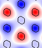
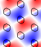
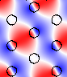
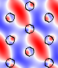
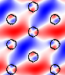
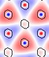
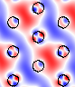
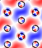
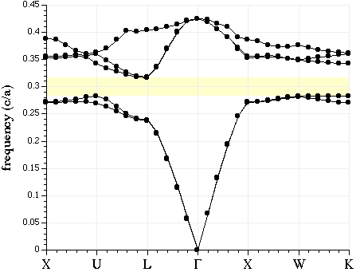
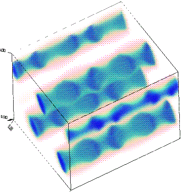

Go to the next, previous, or main
section.
Data Analysis Tutorial
In the previous section, we focused on how to perform a calculation
in MPB. Now, we'll give a brief tutorial on what you might do with
the results of the calculations, and in particular how you might
visualize the results. We'll focus on two systems, one
two-dimensional and one three-dimensional.
First, we'll return to the two-dimensional triangular lattice of rods in
air from the tutorial. The control file for this calculation, which
can also be found in mpb-ctl/examples/tri-rods.ctl, will
consist of:
The tri-rods.ctl control file
(set! num-bands 8)
(set! geometry-lattice (make lattice
(basis1 (/ (sqrt 3) 2) 0.5)
(basis2 (/ (sqrt 3) 2) -0.5)))
(set! geometry (list (make cylinder
(center 0 0 0) (radius 0.2) (height infinity)
(material (make dielectric (epsilon 12))))))
(set! k-points (list (vector3 0 0 0) ; Gamma
(vector3 0 0.5 0) ; M
(vector3 (/ -3) (/ 3) 0) ; K
(vector3 0 0 0))) ; Gamma
(set! k-points (interpolate 4 k-points))
(set! grid-size (vector3 32 32 1))
(run-tm (output-at-kpoint (vector3 (/ -3) (/ 3) 0) output-efield-z))
(run-te)
Notice that we're computing both TM and TE bands (where we expect a
gap in the TM bands), and are outputting the z component of the
electric field for the TM bands at the K point.
Now, run the calculation, directing the output to a file, by
entering the following command at the Unix prompt:
unix% mpb tri-rods.ctl >& tri-rods.out
It should finish after a minute or two.
The tri-rods dielectric function
In most cases, the first thing we'll want to do is to look at the
dielectric function, to make sure that we specified the correct
geometry. We can do this by looking at the epsilon.h5
output file.
The first thing that might come to mind would be to examine
epsilon.h5 directly, say by converting it to a PNG image with
h5topng (from my free h5utils package),
magnifying it by 3:
unix% h5topng -X 3 -Y 3 epsilon.h5
 The resulting image
(
The resulting image
(epsilon.png) is shown at right, and it initially seems
wrong! Why is the rod oval-shaped and not circular? Actually, the
dielectric function is correct, but the image is distorted because the
primitive cell of our lattice is a rhombus (with 60-degree acute
angles). Since the output grid of MPB is defined over the
non-orthogonal unit cell, while the image produced by
h5topng (and most other plotting programs) is square, the
image is skewed.
We can fix the image in a variety of ways, but the best way is
probably to use the mpb-data utility included (and
installed) with MPB. mpb-data allows us to rearrange the
data into a rectangular cell (-r) with the same
area/volume, expand the data to include multiple periods (-m
periods), and change the resolution per unit distance in
each direction to a fixed value (-n resolution).
man mpb-data or run mpb-data -h for more
options. In this case, we'll rectify the cell, expand it to three
periods in each direction, and fix the resolution to 32 pixels:
unix% mpb-data -r -m 3 -n 32 epsilon.h5
It's important to use -n when you use -r,
as otherwise the non-square unit cell output by -r will
have a different density of grid points in each direction, and appear
distorted. The output of mpb-data is by default an
additional dataset within the input file, as we can see by running
h5ls:
unix% h5ls epsilon.h5
data Dataset {32, 32}
data-new Dataset {96, 83}
description Dataset {SCALAR}
lattice\ copies Dataset {3}
lattice\ vectors Dataset {3, 3}
Here, the new dataset
output by mpb-data is the one called
data-new. We can examine it by running
h5topng again, this time explicitly specifying the name
of the dataset (and no longer magnifying):
unix% h5topng epsilon.h5:data-new
The new epsilon.png output image is shown at right.
As you can see, the rods are now circular as desired, and they clearly
form a triangular lattice.
Gaps and and band diagram for tri-rods
At this point, let's check for band gaps by picking out lines with
the word "Gap" in them:
unix% grep Gap tri-rods.out
Gap from band 1 (0.275066439346827) to band 2 (0.446290429077378), 47.4727550885009%
Gap from band 3 (0.563584034021526) to band 4 (0.593059150925396), 5.09666546908704%
Gap from band 4 (0.79116192674256) to band 5 (0.792043037927768), 0.111307279205154%
Gap from band 5 (0.838732466052519) to band 6 (0.840307998313466), 0.187670552840708%
Gap from band 6 (0.86928536632084) to band 7 (0.873497179273491), 0.483343485772052%
Gap from band 4 (0.821661555010753) to band 5 (0.86445473122796), 5.07594601469253%
The first five gaps are for the TM bands (which we ran first), and
the last gap is for the TE bands. Note, however that the < 1% gaps
are probably false positives due to band crossings, as described in
the user tutorial. There are
no complete (overlapping TE/TM) gaps, and the largest gap is the 47%
TM gap as expected. (To be absolutely sure of the other band gaps, we
would also check k-points within the interior of the Brillouin zone,
but we'll omit that step here.)
Next, let's plot out the band structure. To do this, we'll first
extract the TM and TE bands as comma-delimited text, which can then be
imported and plotted in our favorite spreadsheet/plotting program.
unix% grep tmfreqs tri-rods.out > tri-rods.tm.dat
unix% grep tefreqs tri-rods.out > tri-rods.te.dat
The TM and TE bands are both plotted below against the "k index"
column of the data, with the special k-points labelled. TM bands are
shown in blue (filled circles) with the gaps shaded light blue, while
TE bands are shown in red (hollow circles) with the gaps shaded light
red.

Note that we truncated the upper frequencies at a cutoff of 1.0 c/a.
Although some of our bands go above that frequency, we didn't compute
enough bands to fill in all of the states in that range. Besides, we
only really care about the states around the gap(s), in most cases.
The source of the TM gap: examining the modes
Now, let's actually examine the electric-field distributions for
some of the bands (which were output at the K point, remember).
Besides looking neat, the field patterns will tell us about the
characters of the modes and provide some hints regarding the origin of
the band gap.
As before, we'll run mpb-data on the field output
files (named e.k11.b*.z.tm.h5), and then run
h5topng to view the results:
unix% mpb-data -r -m 3 -n 32 e.k11.b*.z.tm.h5
unix% h5topng -C epsilon.h5:data-new -c -Z -d z.r-new e.k11.b*.z.tm.h5
Here, we've used the -C option to superimpose (crude)
black contours of the dielectric function over the fields,
-c to use a blue-white-red color table, -Z
to center the color scale at zero (white), and -d to
specify the dataset name for all of the files at once. man
h5topng for more information. (There are plenty of
data-visualization programs available if you want more sophisticated
plotting capabilities than what h5topng offers, of
course.)
Note that the dataset name is z.r-new, which is the
real part of the z component of the output of mpb-data.
The real and imaginary parts of the fields correspond to what the
fields look like at half-period intervals in time, and in general they
are different. However, at K they are redundant, due to the inversion
symmetry of that k-point (proof left as an exercise for the reader).
So, it suffices in our case to look at the real parts. (And, of
course, since these are TM fields, the z component is the only
component of the electric field.)
The resulting field images are shown below:
| TM band 1 |
TM band 2 |
TM band 3 |
TM band 4 |
TM band 5 |
TM band 6 |
TM band 7 |
TM band 8 |
|  |
 |
 |
 |
 |
 |
 |
 |
We can see several things from these plots.
First, the origin of the band gap is apparent. The lowest band is
concentrated within the dielectric rods in order to minimize its
frequency. The next band(s), in order to be orthogonal, are forced to
have a node within the rods, imposing a large "kinetic energy" cost
and hence a gap. Successive bands have more and more complex nodal
structures in order to maintain orthogonality. (The contrasting
absence of a large TE gap has to do with boundary conditions. The
perpendicular component of the displacement field must be continuous
across the dielectric boundary, but the parallel component need not
be.)
We can also see the deep impact of symmetry on the states. The K
point has the full C6v symmetry of the dielectric
structure. This symmetry group has only one two-dimensional
representation, and we can see that all three pairs of degenerate
states (2/3, 4/5, and 7/8) fall into this "p-like" category (where the
states differ by 90 degree rotations, essentially). The other two
bands, 1 and 6, transform under the trivial "s-like" representation
(with band 6 just a higher-order version of 1).
"Then were the entrances of this world made narrow, full of sorrow and
travail: they are but few and evil, full of perils, and very
painful." (Ezra 4:7)
Now, let us turn to a three-dimensional structure, a diamond
lattice of dielectric spheres in air. The basic techniques to compute
and analyze the modes of this structure are the same as in two
dimensions, but of course, everything becomes more complicated in 3d.
It's harder to find a structure with a complete gap, the modes are no
longer polarized, the computations are far bigger, and visualization
is much more difficult, for starters.
The control file for this calculation, which can also be found in
mpb-ctl/examples/diamond.ctl, consists of:
Diamond control file
(set! geometry-lattice (make lattice
(basis1 0 1 1)
(basis2 1 0 1)
(basis3 1 1 0)))
; Corners of the irreducible Brillouin zone for the fcc lattice,
; in a canonical order:
(set! k-points (interpolate 4 (list
(vector3 0 0.5 0.5) ; X
(vector3 0 0.625 0.375) ; U
(vector3 0 0.5 0) ; L
(vector3 0 0 0) ; Gamma
(vector3 0 0.5 0.5) ; X
(vector3 0.25 0.5 0.75) ; W
(vector3 0.375 0.375 0.75)))) ; K
; define a couple of parameters (which we can set from the command-line)
(define-param eps 11.56) ; the dielectric constant of the spheres
(define-param r 0.35) ; the radius of the spheres
(define diel (make dielectric (epsilon eps)))
; A diamond lattice has two "atoms" per unit cell:
(set! geometry (list (make sphere (center 0.125 0.125 0.125) (radius r)
(material diel))
(make sphere (center -0.125 -0.125 -0.125) (radius r)
(material diel))))
; (A simple fcc lattice would have only one sphere/object at the origin.)
(set! grid-size (vector3 16 16 16))
(set! mesh-size 5)
(set! num-bands 5)
; run calculation, outputting electric-field energy density at the U point:
(run (output-at-kpoint (vector3 0 0.625 0.375) output-dpwr))
As before, run the calculation, directing the output to a file.
This will take a few minutes (6 minutes on my 450MHz Pentium-II);
we'll put it in the background with nohup so that it will
finish even if we log out:
unix% nohup mpb diamond.ctl >& diamond.out &
Gaps and and band diagram for the diamond lattice
The diamond lattice has a complete band gap:
unix% grep Gap diamond.out
Gap from band 2 (0.28324668665799) to band 3 (0.316525666009875), 11.0972035319253%
We can also plot its band diagram, much as for the tri-rods case
except that now there we can't classify the bands by polarization.
unix% grep freqs diamond.out > diamond.dat
The resulting band diagram, with the complete band gap shaded
yellow, is shown below. Note that we only computed 5 bands, so in
reality the upper portion of the plot would contain a lot more bands
(which are of less interest than the bands adjoining the gap).

Visualizing the diamond lattice structure and bands
Visualizing fields in a useful way for general three-dimensional
structures is fairly difficult, but we'll show you what we can with
the help of the free Vis5D
volumetric-visualization program, and the h5tov5d
conversion program from h5utils.
First, of course, we've got to rectangularize the unit cell using
mpb-data, as before. We'll also expand it to two
periods in each direction.
unix% mpb-data -m 2 -r -n 32 epsilon.h5 dpwr.k06.b*.h5
Then, we'll use h5tov5d to convert the resulting
datasets to Vis5D format, joining all the datasets into a single file
(diamond.v5d) so that we can view them simultaneously if
we want to:
unix% h5tov5d -o diamond.v5d -d data-new epsilon.h5 dpwr.k06.b*.h5
Note that all of the datasets are named data-new (from
the original datasets called data) since we are looking
at scalar data (the time-averaged electric-field energy density). No
messy field components or real and imaginary parts this time; we have
enough to deal with already.
Now we can open the file with Vis5D and play around with various
plots of the data:
unix% vis5d diamond.v5d &
If you stare at the dielectric function long enough from various
angles, you can convince yourself that it is a diamond lattice:

The lowest two bands have their fields concentrated within the
spheres as you might expect, flowing along more-or-less linear paths.
The second band differs from the first mainly by the orientation of
its field paths. The fields for the first band at U are depicted
below, with the strongest fields (highest energy density) shown as the
most opaque, blue pixels. Next to it is the same plot but with an
isosurface at the boundary of the dielectric superimposed, so you can
see that the energy is concentrated inside the dielectric.


The first band above the gap is band 3. Its field energy densities
are depicted below in the same manner as above. The field patterns
are considerably harder to make out than for the lower band, but the
seem to be more diffuse and "clumpy," the latter likely indicating the
expected field oscillations for orthogonality with the lower bands.


Go to the next, previous, or main section.